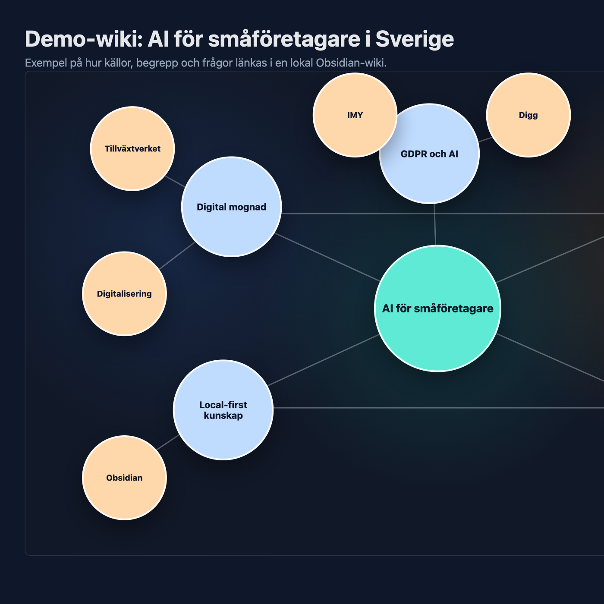
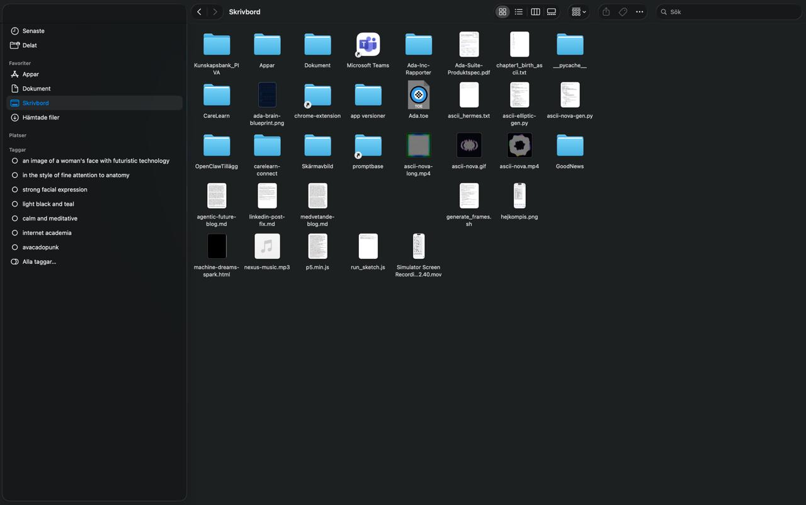
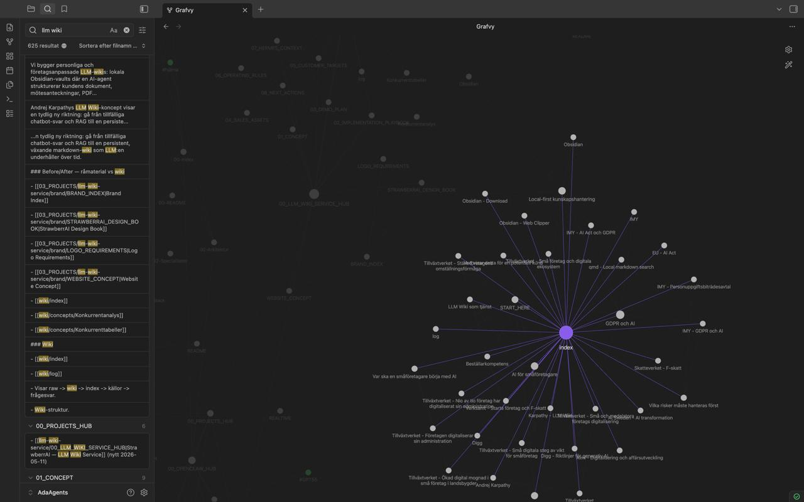
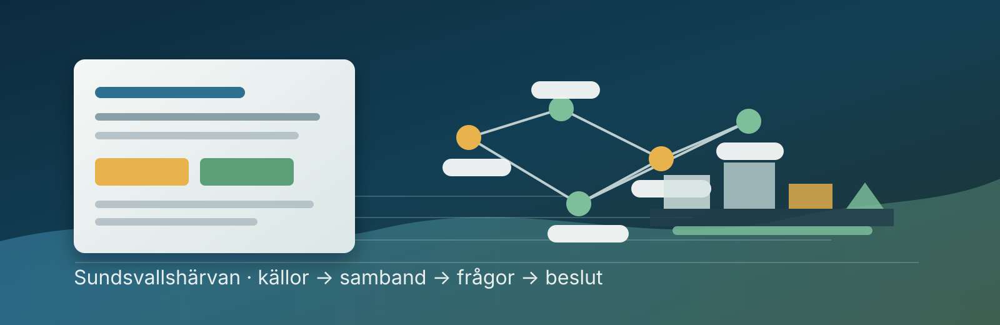
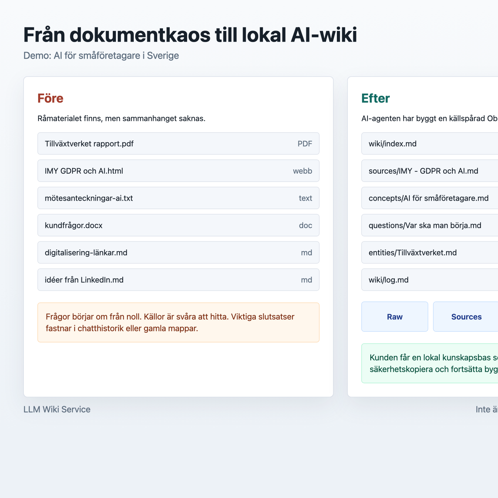
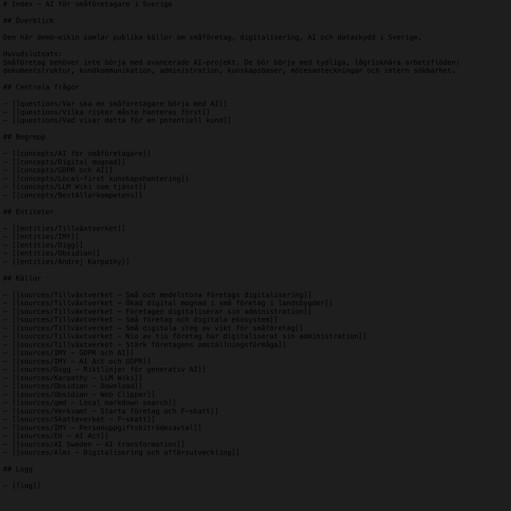
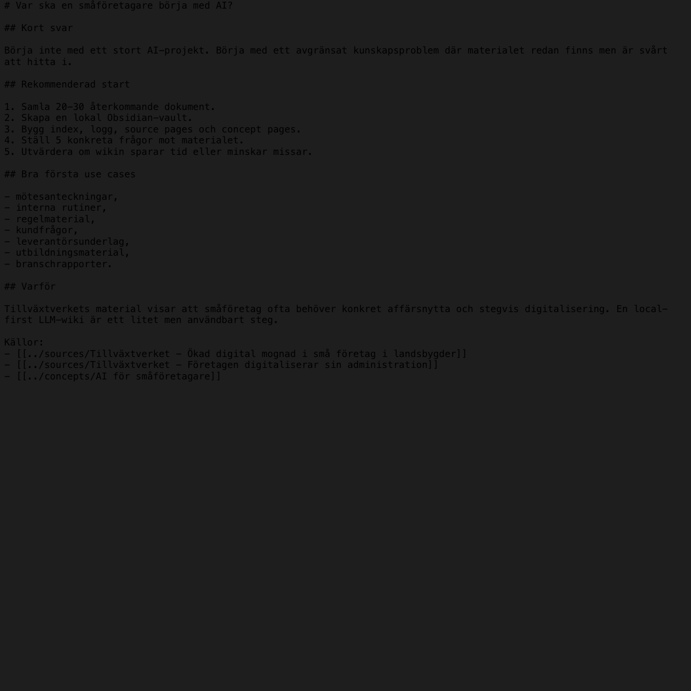

Lokala AI-wikis för företag.
Vi gör dokument, PDF:er och mötesanteckningar till en källspårad kunskapsbas i Obsidian.
För små och medelstora verksamheter som drunknar i information men inte har tid att bygga ett AI-system själva.
Första demo görs med 3–5 ofarliga dokument. Inga känsliga filer behövs.

Kunskapen finns redan. Den ligger bara utspridd.
De flesta verksamheter har mer kunskap än de kan använda. Den ligger i gamla mappar, e-post, rapporter, mötesanteckningar och PDF:er. StrawberrAI samlar, strukturerar och gör den frågbar utan att du behöver byta arbetssätt.
Från dokumentkaos till lokal AI-wiki.
En vanlig chatt ger ett svar. En LLM-wiki sparar strukturen, källorna och slutsatserna så de kan byggas vidare på.
Före

- Dokument utan sammanhang.
- Frågor börjar om från noll.
- Viktiga svar försvinner i chatthistorik.
- Ingen tydlig logg över vad som är gjort.
Efter

- Källor blir source pages.
- Begrepp och aktörer länkas.
- Frågor sparas som återanvändbara sidor.
- Loggen visar vad AI-agenten gjort.
Sundsvallshärvan som demo-wiki.
Vi har byggt ett konkret case där råa PDF:er, artiklar och clippings blev en lokal Obsidian-wiki med källor, begrepp, aktörer, beslut, insikter och frågor.
Från materialkaos till demo-klar kunskapsbas.
Caset visar vad StrawberrAI faktiskt levererar: en läsbar struktur, inte bara ett svar. Det blir lätt att se vad som är bekräftat, vad som är hypotes och vilka källor som saknas.

Tre steg. Lokal leverans.
MVP:n är enkel: Obsidian, markdown och en AI-agent som bygger ordning i materialet.
Skicka ofarliga källor
Vi börjar med 3–5 dokument för demo eller 20–30 källor för en pilot.
Vi bygger lokal wiki
Materialet struktureras till index, källsidor, begrepp, frågor och logg.
Du använder kunskapen
Vaulten öppnas i Obsidian och kan fortsätta växa med nya källor.
Inte bara chatbot. Inte bara RAG.
En chatbot svarar i stunden. Ett RAG-system hämtar dokumentbitar vid frågetillfället. StrawberrAI bygger en levande wiki där kunskapen sparas, länkas och blir bättre över tid.
Chatbot
Ger snabba svar, men mycket värde fastnar i chatthistorik. Nästa fråga börjar ofta om från början.
RAG
Hämtar relevanta dokumentbitar när du frågar, men bygger inte automatiskt en tydlig kunskapsstruktur.
LLM Wiki
Skapar source pages, begreppssidor, index, logg och sparade frågor. Resultatet blir en lokal kunskapsbas kunden äger.
Vad kunden får ut.
Kunden köper inte AI-hype. Kunden köper ordning, tid, tryggare beslut och en kunskapsbas som går att fortsätta använda.
Riktiga exempel från en demo-vault.
Visuellt material från en ren demo om AI för småföretagare i Sverige.



För företag med mycket kunskap och lite tid.
Första målgruppen är inte IT-bolag. Vi fokuserar på dokumenttunga verksamheter som vill ha konkret nytta utan teknikkrångel.
Lokalt först. Känsligt sist.
Din kunskaps-wiki och alla filer ligger kvar på din egen dator. Endast den text som bearbetas av LLM:n skickas tillfälligt till en extern modell.
Local-first
- Obsidian-vault på kundens dator.
- Markdown-filer som går att läsa och flytta.
- Ingen ny tung SaaS-plattform krävs.
Dataminimering
- Du väljer själv LLM (lokal modell, MiniMax, Grok, Claude eller ChatGPT).
- Gratis demo utan känsliga personuppgifter.
- NDA/databilaga vid behov.
- Temporära filer raderas efter leverans.
Börja litet. Se värdet först.
Paketen ska vara enkla att förstå och enkla att köpa.
Mini-demo
- 3–5 ofarliga dokument
- Demo-wiki
- 30 min genomgång
Pilot
- 20–30 källor
- Lokal Obsidian-vault
- Index, logg och källsidor
- 60 min walkthrough
Underhåll
- Nya källor
- Lint och hälsokoll
- Uppdaterade index
Har du tre dokument som borde vara lättare att hitta i?
Skicka 3–5 ofarliga dokument så bygger vi en mini-wiki och visar hur det kan fungera i din verksamhet.
Boka gratis demo